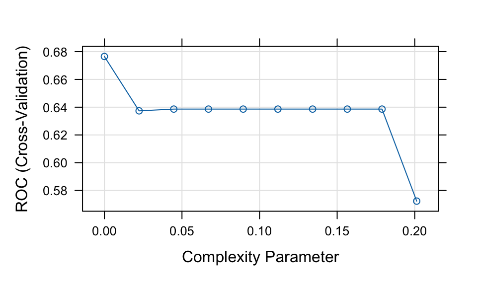
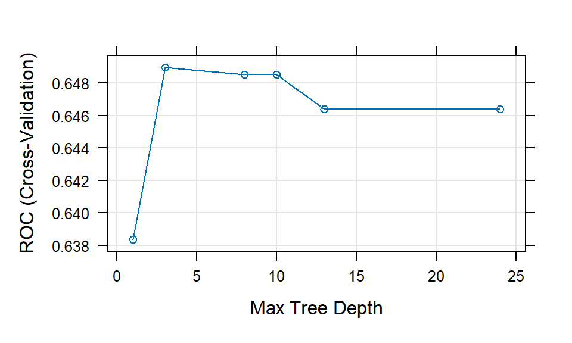
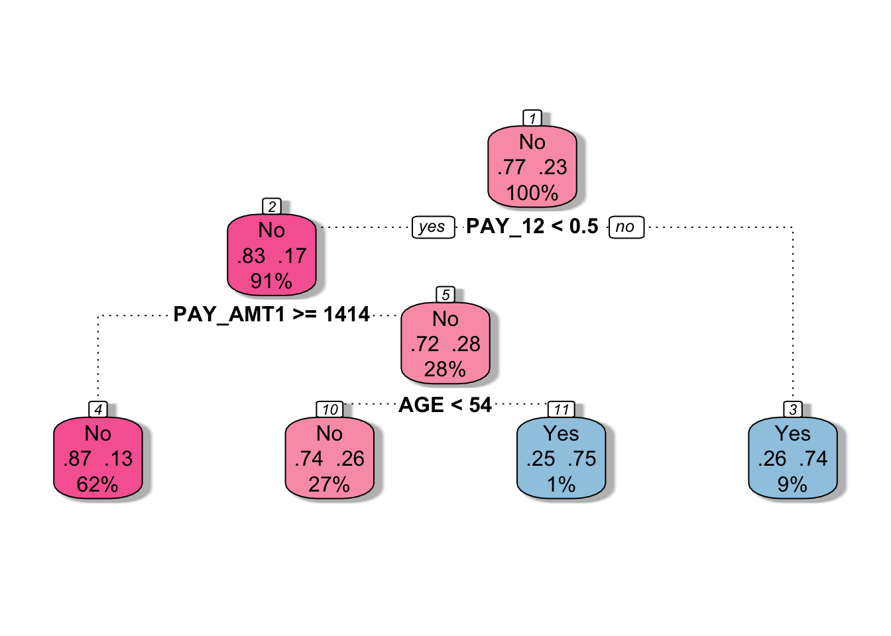
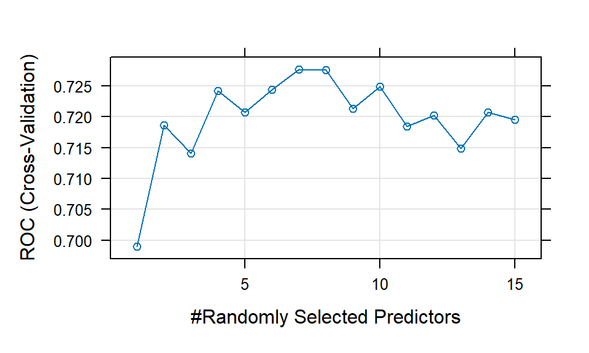
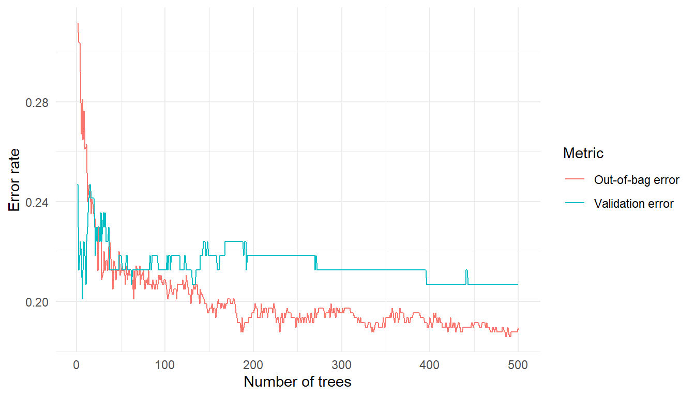
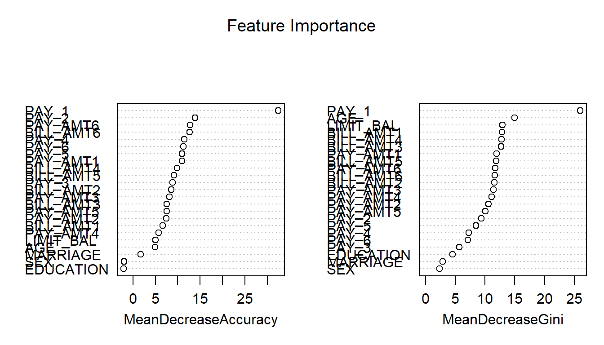
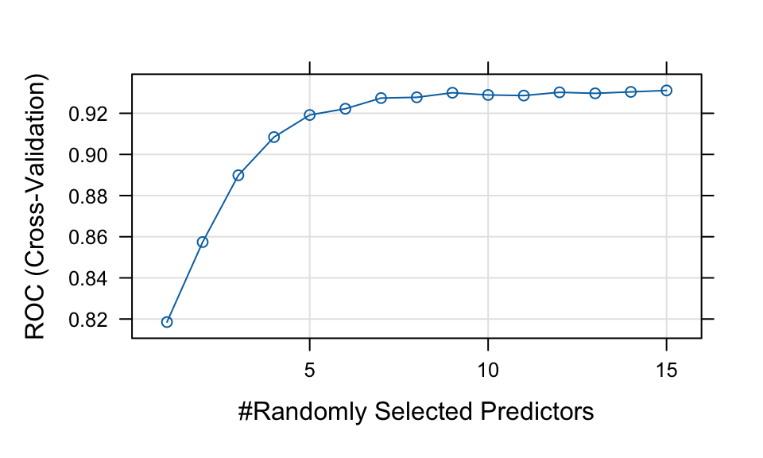

# Load required packages
library(dplyr)
library(randomForest)
library(caret)
library(pROC)
library(ROCR)
library(tidyr)
library(PRROC) # ROC and PR curves
library(ranger)
# Load data
credit <- read.csv("credit.csv") %>%
dplyr::select(-X, -ID)
# Convert categorical variables to factors
pay_colnames <- paste0("PAY_", 1:6)
credit <- credit %>%
mutate(
across(
c(EDUCATION, MARRIAGE, SEX, default, all_of(pay_colnames)),
as.factor
)
)
credit$default <- as.factor(ifelse(credit$default == 1, "Yes", "No"))
# Save the full dataset
credit_full <- credit
# Extract a sample from the full dataset to speed up computation
set.seed(310)
credit <- credit[sample(nrow(credit), size = 1000, replace = FALSE), ]
# Split the data into training and test sets
set.seed(123)
index <- createDataPartition(credit$default, p = 0.7, list = FALSE)
train <- credit[index, ]
test <- credit[-index, ]Lab: Random Forest
Actuarial Data Science - Open Learning Resource
Learning Objectives
In this lab, we will:
Use tree-based methods, including classification trees, bagging, and random forests (RF), to predict whether a credit card client will default.
Implement classification trees in R and explore the tuning process, including the choice of hyperparameters and the use of grid or random search.
Explore two methods for assessing feature importance.
Introduction
In this lab, we use credit card client data from Taiwan to predict whether a client will default. The dataset contains 30{,}000 observations described by 24 attributes. It includes information on default payments, demographic factors, credit information, repayment history, and bill statements of credit card clients in Taiwan from April 2005 to September 2005.
In credit lending, prediction errors can lead to business or financial losses. For example, rejecting a good client may result in a lost business opportunity, while approving a high-risk client may lead to financial loss.
For illustrative purposes, we will work with a subset of 1,000 observations, as running these methods on the complete dataset could be time-consuming. After the lab, you are encouraged to explore the full dataset or a larger sample to compare the results.
Data Preparation
Classification Metrics
Area under the curve
We use the area under the receiver operating characteristic curve (\text{AUC}) to evaluate the models in this case study. The receiver operating characteristic (ROC) curve illustrates the performance of a classification model across all classification thresholds. It plots the true positive rate (TPR) against the false positive rate (FPR).
Lowering the classification threshold classifies more observations as positive, which increases both true positives and false positives.
The \text{AUC} measures the total area under the ROC curve, ranging from (0,0) to (1,1). A higher AUC indicates better overall classification performance in distinguishing between defaulters and non-defaulters.
Confusion Matrix
A confusion matrix summarises the prediction outcomes in a classification problem:
- True Positive (\text{TP}): predicted positive and actually positive
- True Negative (\text{TN}): predicted negative and actually negative
- False Positive (\text{FP}): predicted positive but actually negative
- False Negative (\text{FN}): predicted negative but actually positive
Classification Accuracy
Classification accuracy is defined as:
\text{Accuracy} = \frac{\text{TP} + \text{TN}}{\text{TP} + \text{TN} + \text{FP} + \text{FN}}
Recall (Sensitivity)
Recall measures the proportion of actual positives that are correctly identified:
\text{Recall} = \frac{\text{TP}}{\text{TP} + \text{FN}}
Precision
Precision measures the proportion of predicted positives that are actually positive:
\text{Precision} = \frac{\text{TP}}{\text{TP} + \text{FP}}
F-score
The F-score is the harmonic mean of precision and recall. It penalises extreme values more than the arithmetic mean:
\text{F-score} = \frac{2 \times \text{Precision} \times \text{Recall}}{\text{Precision} + \text{Recall}}
It balances the trade-off between precision and recall and is particularly useful when the classes are imbalanced.
Tree-Based Methods
Tree-based methods can be used for both regression and classification problems. They work by partitioning the predictor space into a set of simple regions. For a given observation, the prediction is typically based on the mean (for regression) or the mode (for classification) of the training observations within the corresponding region.
Because the partitioning rules can be represented as a tree structure, these methods are known as decision tree methods. Tree-based methods are simple, intuitive, and easy to interpret.
In this lab, we consider three tree-based methods: classification trees, bagging, and random forests (RF).
# Define control parameters for model training
fitcontrol <- trainControl(
method = "cv",
number = 5,
savePredictions = TRUE,
classProbs = TRUE,
summaryFunction = twoClassSummary,
allowParallel = TRUE
)The trainControl() function specifies how model training and evaluation are performed in the caret framework. The key parameters include:
method: Specifies the resampling method. Common options include"boot","cv","LOOCV","repeatedcv", and"none". In this lab, we use cross-validation ("cv").numberandrepeats:numbercontrols the number of folds in K-fold cross-validation or the number of resampling iterations for bootstrapping and leave-group-out cross-validation.repeatsis used only for repeated cross-validation ("repeatedcv"). For instance, ifmethod = "repeatedcv",number = 10, andrepeats = 5, the resampling scheme employs five separate 10-fold cross-validations.
In this lab, we use a 5-fold cross-validation scheme.
Decision Trees
A classification tree is used to predict a categorical response. Each observation is assigned to the class that is most common among the training observations in the region to which it belongs.
In addition to class predictions, it is often useful to examine the class proportions within each terminal node, as these provide insight into the uncertainty of the prediction.
Decision trees are particularly useful when the relationship between predictors and the response is complex and non-linear. They are easy to interpret (i.e., they are easier to explain than linear regression) and can naturally handle categorical predictors without the need for dummy variables.
However, decision trees often have lower predictive accuracy compared to other methods. They are also unstable: small changes in the data can lead to different splits and substantially different tree structures. This motivates the use of ensemble methods such as bagging and random forests.
# Decision Tree 1 (CART with cp tuning)
set.seed(319)
tree1 <- train(
default ~ .,
data = train,
method = "rpart",
metric = "ROC",
trControl = fitcontrol,
tuneLength = 10
)
print(tree1)CART
701 samples
23 predictor
2 classes: 'No', 'Yes'
No pre-processing
Resampling: Cross-Validated (5 fold)
Summary of sample sizes: 561, 561, 561, 560, 561
Resampling results across tuning parameters:
cp ROC Sens Spec
0.00000000 0.6765210 0.8763677 0.3719758
0.02236198 0.6373553 0.9667516 0.3086694
0.04472397 0.6386279 0.9685865 0.3086694
0.06708595 0.6386279 0.9685865 0.3086694
0.08944794 0.6386279 0.9685865 0.3086694
0.11180992 0.6386279 0.9685865 0.3086694
0.13417191 0.6386279 0.9685865 0.3086694
0.15653389 0.6386279 0.9685865 0.3086694
0.17889588 0.6386279 0.9685865 0.3086694
0.20125786 0.5723380 0.9759259 0.1687500
ROC was used to select the optimal model using the largest value.
The final value used for the model was cp = 0.plot(tree1)
# Note: the default classification threshold is 0.5
print(tree1)CART
701 samples
23 predictor
2 classes: 'No', 'Yes'
No pre-processing
Resampling: Cross-Validated (5 fold)
Summary of sample sizes: 561, 561, 561, 560, 561
Resampling results across tuning parameters:
cp ROC Sens Spec
0.00000000 0.6765210 0.8763677 0.3719758
0.02236198 0.6373553 0.9667516 0.3086694
0.04472397 0.6386279 0.9685865 0.3086694
0.06708595 0.6386279 0.9685865 0.3086694
0.08944794 0.6386279 0.9685865 0.3086694
0.11180992 0.6386279 0.9685865 0.3086694
0.13417191 0.6386279 0.9685865 0.3086694
0.15653389 0.6386279 0.9685865 0.3086694
0.17889588 0.6386279 0.9685865 0.3086694
0.20125786 0.5723380 0.9759259 0.1687500
ROC was used to select the optimal model using the largest value.
The final value used for the model was cp = 0.plot(tree1)
# Note: the default classification threshold is 0.5
# Predictions (class labels)
tree1_pred <- predict(tree1, newdata = test, type = "raw")
tree1_conf <- confusionMatrix(tree1_pred, test$default, positive = "Yes")
# Predictions (probabilities)
tree1_probpred <- predict(tree1, newdata = test, type = "prob")
tree1_auc <- roc.curve(
scores.class0 = tree1_probpred$Yes,
weights.class0 = as.numeric(test$default) - 1,
curve = TRUE
)
tree1_auc$auc[1] 0.5872362In this lab, we use the train() function from the caret package to fit tree-based models. For a full list of supported models, see the caret model list.
Here, we use the rpart method to fit a classification tree. The key tuning parameter is the complexity parameter (cp), which controls tree pruning. A larger value of cp results in fewer splits, while a smaller value allows for a more complex tree.
During model tuning with train(), there are two common approaches for selecting tuning parameters:
Grid search: Specify a grid of parameter values using the
tuneGridargument. This allows systematic evaluation of different combinations.Random search: Set
search = "random"intrainControl. ThetuneLengthparameter then determines how many combinations are randomly sampled (sometimes R can automatically handle this even if you don’t explicitly define it).
In this example, we use tuneLength = 10, which performs a random search over 10 parameter combinations.
Example: Grid Search
Instead of using random search, we can explicitly define a grid of tuning parameter values using tuneGrid. For example:
tree1_grid <- train(
default ~ .,
data = train,
method = "rpart",
trControl = fitcontrol,
tuneGrid = expand.grid(cp = seq(0.001, 0.005, 0.0005))
)Based on the results above, the CART model shows relatively weak performance. We now consider an alternative approach to fitting a decision tree model.
# Decision Tree 2 (max depth tuning using rpart2)
set.seed(192)
tree2 <- train(
default ~ .,
data = train,
method = "rpart2",
metric = "ROC",
trControl = fitcontrol,
tuneLength = 10
)note: only 6 possible values of the max tree depth from the initial fit.
Truncating the grid to 6 .print(tree2)CART
701 samples
23 predictor
2 classes: 'No', 'Yes'
No pre-processing
Resampling: Cross-Validated (5 fold)
Summary of sample sizes: 561, 560, 562, 560, 561
Resampling results across tuning parameters:
maxdepth ROC Sens Spec
1 0.6383680 0.9686714 0.3080645
3 0.6489619 0.9446823 0.3207661
8 0.6485267 0.9261468 0.3270161
10 0.6485267 0.9261468 0.3270161
13 0.6463855 0.9187394 0.3332661
24 0.6463855 0.9187394 0.3332661
ROC was used to select the optimal model using the largest value.
The final value used for the model was maxdepth = 3.plot(tree2)
# Class predictions
tree2_pred <- predict(tree2, newdata = test, type = "raw")
tree2_conf <- confusionMatrix(tree2_pred, test$default, positive = "Yes")
# Probability predictions
tree2_probpred <- predict(tree2, newdata = test, type = "prob")
tree2_auc <- roc.curve(
scores.class0 = tree2_probpred$Yes,
weights.class0 = as.numeric(test$default) - 1,
curve = TRUE
)
tree2_auc$auc[1] 0.6612841library(rattle)
# fancyRpartPlot(tree1$finalModel, palettes = "RdPu") # For tree1
fancyRpartPlot(tree2$finalModel, sub = "", palettes = "RdPu") # For tree2
The rpart2 method tunes the maximum tree depth, which directly controls the complexity of the tree.
According to the tuning results, the fitted model uses a small number of predictors (e.g., PAY_1, PAY_AMT1, and AGE), resulting in a relatively simple tree structure.
Compared to tree1, this model is more constrained and therefore less complex. This often helps reduce overfitting and can lead to improved predictive performance.
Question:
Before visualizing the first fitted decision tree (tree1), take a guess: will it be more complex or simpler than tree2?
Bagging
Bagging (bootstrap aggregation) is an ensemble method that improves predictive performance by combining multiple models. It works by repeatedly sampling (with replacement) from the training data and fitting the same model on each bootstrap sample.
For example, when applied to decision trees, bagging can transform a single high-variance tree into a more stable and accurate predictive model. The final prediction is obtained by averaging (for regression) or voting (for classification) across all models.
Advantages
Variance reduction: Bagging reduces prediction variance by averaging over many models. This is particularly effective for unstable models such as decision trees.
Out-of-bag (OOB) error estimation: Each bootstrap sample leaves out some observations. These are called out-of-bag samples and can be used to evaluate model performance without the need for a separate validation set.
- Averaging the OOB error across all models provides a reliable estimate of predictive performance, often comparable to cross-validation.
Limitations
Computational cost: Training many models increases computation time and memory usage. However, this can often be mitigated through parallel computing, since each model is trained independently.
Reduced interpretability: Compared to a single decision tree, a bagged model is more difficult to interpret because it aggregates many models.
# Bagging
set.seed(643)
bag <- train(
default ~ .,
data = train,
method = "treebag",
metric = "ROC",
trControl = fitcontrol
)
print(bag)Bagged CART
701 samples
23 predictor
2 classes: 'No', 'Yes'
No pre-processing
Resampling: Cross-Validated (5 fold)
Summary of sample sizes: 560, 560, 562, 561, 561
Resampling results:
ROC Sens Spec
0.7297152 0.9262147 0.3266129# Class predictions
bag_pred <- predict(bag, newdata = test, type = "raw")
bag_conf <- confusionMatrix(bag_pred, test$default, positive = "Yes")
# Probability predictions
bag_probpred <- predict(bag, newdata = test, type = "prob")
bag_auc <- roc.curve(
scores.class0 = bag_probpred$Yes,
weights.class0 = as.numeric(test$default) - 1,
curve = TRUE
)
bag_auc$auc[1] 0.6766276We trained a bagged CART model using the treebag method. By default, caret does not tune any parameters for treebag. However, we can still explore different tree settings manually by fitting models over a grid of hyperparameter values.
# Create a hyperparameter grid
tuning_grid <- expand.grid(
maxdepth = c(1, 3, 5, 8, 15),
minsplit = c(2, 5, 10, 15),
ROC = NA,
Sens = NA,
Spec = NA
)
# Full grid search
set.seed(761)
for (i in seq_len(nrow(tuning_grid))) {
fit <- train(
default ~ .,
data = train,
method = "treebag",
metric = "ROC",
trControl = fitcontrol,
maxdepth = tuning_grid$maxdepth[i],
minsplit = tuning_grid$minsplit[i]
)
tuning_grid$ROC[i] <- fit$results$ROC
tuning_grid$Sens[i] <- fit$results$Sens
tuning_grid$Spec[i] <- fit$results$Spec
}
# Inspect the top 10 models
tuning_grid %>%
arrange(desc(ROC)) %>%
head(10)
best_ROC <- tuning_grid[tuning_grid$ROC == max(tuning_grid$ROC), ]The code above is displayed but not executed during rendering. You may run it separately and experiment with different tuning grids.
For the treebag method, the relevant hyperparameters are similar to those used in rpart. The maxdepth parameter controls the maximum depth of the tree, with the root node counted as depth 0. The minsplit parameter specifies the minimum number of observations required in a node before a split is attempted. The minbucket parameter, which controls the minimum number of observations in a terminal node, is not tuned in the code above.
# Update the following values based on the results from the previous grid search
best_ROC <- expand.grid(
maxdepth = 3,
minsplit = 15
)
# Refit the bagged model using the selected hyperparameters
set.seed(889)
bag_best <- train(
default ~ .,
data = train,
method = "treebag",
metric = "ROC",
trControl = fitcontrol,
maxdepth = best_ROC$maxdepth,
minsplit = best_ROC$minsplit
)
print(bag_best)Bagged CART
701 samples
23 predictor
2 classes: 'No', 'Yes'
No pre-processing
Resampling: Cross-Validated (5 fold)
Summary of sample sizes: 560, 560, 562, 561, 561
Resampling results:
ROC Sens Spec
0.6967232 0.9336901 0.3272177# Class predictions
bag_best_pred <- predict(bag_best, newdata = test, type = "raw")
bag_best_conf <- confusionMatrix(bag_best_pred, test$default, positive = "Yes")
# Probability predictions
bag_best_probpred <- predict(bag_best, newdata = test, type = "prob")
bag_best_auc <- roc.curve(
scores.class0 = bag_best_probpred$Yes,
weights.class0 = as.numeric(test$default) - 1,
curve = TRUE
)
bag_best_auc$auc[1] 0.6853127The selected values for maxdepth and minsplit are 3 and 15, respectively, based on the grid search example above. You may experiment with different tuning grids, larger sample sizes, or different random seeds. If you make any changes, remember to update the selected hyperparameter values accordingly.
Compared with the default treebag model, the tuned bagging model does not appear to produce a substantial improvement in this example. This suggests that the gain from tuning maxdepth and minsplit may be limited for this particular dataset and sample.
Random Forest
Random forest is an extension of bagging that aims to further improve predictive performance by reducing the correlation between individual trees.
Like bagging, random forest builds multiple decision trees using bootstrap samples of the training data. However, at each split, only a random subset of predictors is considered. This additional randomness helps to decorrelate the trees, leading to better ensemble performance.
Random forest is a powerful and widely used “out-of-the-box” learning algorithm that often achieves strong predictive accuracy with minimal tuning.
Advantages
Reduced variance and improved accuracy: By combining many decorrelated trees, random forest typically outperforms a single tree and often improves upon standard bagging.
Feature importance: Random forest provides measures of variable importance, allowing us to assess which predictors contribute most to the model.
Limitations
Reduced interpretability: Similar to bagging, random forest is less interpretable than a single decision tree.
Correlated predictors: When predictors are highly correlated, their importance may be spread across them, making each individual variable appear less important.
# Random forest
set.seed(248)
rf <- train(
default ~ .,
data = train,
method = "rf",
metric = "ROC",
trControl = fitcontrol,
tuneGrid = expand.grid(mtry = seq(1, 15, 1))
)
print(rf)Random Forest
701 samples
23 predictor
2 classes: 'No', 'Yes'
No pre-processing
Resampling: Cross-Validated (5 fold)
Summary of sample sizes: 560, 561, 561, 561, 561
Resampling results across tuning parameters:
mtry ROC Sens Spec
1 0.6989830 1.0000000 0.0000000
2 0.7186013 0.9981481 0.0187500
3 0.7140826 0.9962963 0.1512097
4 0.7242228 0.9851852 0.1764113
5 0.7207329 0.9704383 0.1951613
6 0.7244140 0.9649168 0.2203629
7 0.7276587 0.9520048 0.2391129
8 0.7276056 0.9575093 0.2520161
9 0.7212660 0.9520217 0.2393145
10 0.7248414 0.9501529 0.2457661
11 0.7184811 0.9501699 0.2707661
12 0.7202104 0.9501699 0.2707661
13 0.7148240 0.9409276 0.2582661
14 0.7206835 0.9391098 0.2770161
15 0.7195677 0.9409276 0.2832661
ROC was used to select the optimal model using the largest value.
The final value used for the model was mtry = 7.plot(rf)
# Class predictions
rf_pred <- predict(rf, newdata = test, type = "raw")
rf_conf <- confusionMatrix(rf_pred, test$default, positive = "Yes")
# Probability predictions
rf_probpred <- predict(rf, newdata = test, type = "prob")
rf_auc <- roc.curve(
scores.class0 = rf_probpred$Yes,
weights.class0 = as.numeric(test$default) - 1,
curve = TRUE
)
rf_auc$auc[1] 0.700045The rf method is implemented through the randomForest package. The main tuning parameter is mtry, which represents the number of predictors randomly sampled as candidates at each split. By default, mtry is set to \sqrt{p} for classification problems and p/3 for regression problems, where p is the number of predictors.
| Model | Accuracy | AUC | Sensitivity | Specificity | F_score |
|---|---|---|---|---|---|
| Tree 1 | 0.716 | 0.587 | 0.254 | 0.849 | 0.286 |
| Tree 2 | 0.776 | 0.661 | 0.269 | 0.922 | 0.350 |
| Bagging | 0.769 | 0.677 | 0.299 | 0.905 | 0.367 |
| Tuned Bagging | 0.793 | 0.685 | 0.373 | 0.914 | 0.446 |
| Random Forest | 0.789 | 0.700 | 0.209 | 0.957 | 0.308 |
Comparing the results in Table 1, we observe that random forest and tuned bagging have strong predictive performance compared with the other models.
OOB and Test Set Error
Both bagging and random forest use bootstrap resampling, which naturally creates out-of-bag (OOB) samples. These OOB samples provide an efficient approximation of test error and act as a built-in validation set, without requiring us to set aside part of the training data.
This is useful when assessing how many trees are needed for the error rate to stabilise. However, as shown in Figure 1, some difference between the OOB error and validation error is expected.
The randomForest() function also allows us to provide a validation set using the xtest and ytest arguments. Here, we split the training set further into a training subset and a validation subset.
# Create training and validation data
set.seed(123)
index <- createDataPartition(train$default, p = 0.75, list = FALSE)
trainv <- train[index, ]
validv <- train[-index, ]
# Random forest with validation data
random_oob <- randomForest(
default ~ .,
data = trainv,
xtest = validv %>% select(-default),
ytest = validv$default,
mtry = 7
)
# Extract OOB and validation errors
oob <- random_oob$err.rate[, 1]
validation <- random_oob$test$err.rate[, 1]
# Compare error rates
tibble::tibble(
`Out-of-bag error` = oob,
`Validation error` = validation,
ntrees = 1:random_oob$ntree
) %>%
pivot_longer(
cols = c(`Out-of-bag error`, `Validation error`),
names_to = "Metric",
values_to = "Error"
) %>%
ggplot(aes(x = ntrees, y = Error, colour = Metric)) +
geom_line() +
labs(x = "Number of trees", y = "Error rate") +
theme_minimal()
We can identify the number of trees with the lowest OOB error from Figure 1. In this run, the lowest OOB error occurs at 486 trees, with an error rate of 0.186.
Question:
As an alternative, consider modifying the code to use the entire dataset. Implement this change and then explain any differences that arise.
Feature Importance
When training tree-based models, we can measure how much each feature contributes to reducing prediction error. In random forests, this information is aggregated across all trees to provide an overall measure of feature importance.
Feature importance helps us identify which predictors are most influential in the model. Removing irrelevant features can reduce computational cost and improve interpretability, while retaining similar predictive performance.
Mean Decrease in Impurity
In decision trees, each split is chosen to reduce impurity. For classification problems, impurity is typically measured using the Gini index or entropy; for regression, it is measured using variance.
When a feature is used to split the data, the reduction in impurity can be recorded. The mean decrease in impurity measures how much each feature contributes to reducing impurity across all trees in the forest. In a random forest, this reduction is averaged over all trees. Features that lead to larger reductions in impurity are considered more important.
Mean Decrease in Accuracy
Another common approach is to measure feature importance using permutation. The idea is to randomly shuffle the values of a feature and observe how much the model accuracy decreases.
- If permuting a feature has little effect on accuracy, the feature is likely unimportant.
- If permuting a feature significantly reduces accuracy, the feature is likely important.
This measure is referred to as mean decrease in accuracy.
In practice, the rankings produced by these two methods may differ. However, the most important variables often appear near the top in both measures.
From Figure 2, we observe that variables related to repayment status (e.g., payment delay for one month) appear to be among the most influential predictors.
# Fit random forest model
rf <- randomForest(default ~ ., data = train, importance = TRUE)
# Plot feature importance
varImpPlot(rf, main = "Feature Importance")
Limitations of Permutation Feature Importance
Permutation feature importance evaluates the importance of a feature by measuring the increase in prediction error after randomly permuting that feature. A key advantage of this approach is that it is model-agnostic and can be applied to a wide range of machine learning models.
However, it does come with several limitations, as outlined by the Society of Actuaries for actuaries (Baeder, Brinkmann, and Xu 2021).
Correlated features: Permuting correlated features can create unrealistic observations, which may introduce bias in the importance estimates.
Shared information: When predictors contain similar information, their importance may be spread across them, causing each feature to appear less important.
These limitations also apply to other permutation-based interpretation methods, such as partial dependence plots, which rely on a similar permute-and-predict framework.
Retrain the Models with Selected Features
After fitting a random forest model, it is natural to examine which variables contribute most to predictive performance. Features with high importance tend to have a stronger influence on the predicted outcome, while features with low importance may contribute little and can potentially be removed to simplify the model.
However, there is no universal rule for selecting the number of features based on importance rankings (see Figure 2). Random forest provides importance scores rather than a definitive subset of features. In practice, the following approaches are commonly used:
After training a random forest, it is natural to ask which variables have the most predictive power. Variables with high importance are drivers of the outcome, and their values have a significant impact on the outcome values. By contrast, variables with low importance might be omitted from a model, making it simpler and faster to fit and predict.
Selecting the top k most important features;
Identifying a cutoff based on a large drop in importance scores and retain features above this threshold.
In practice, these choices are somewhat subjective and should be guided by both the importance ranking and domain knowledge.
From Figure 2, there is no obvious cutoff point. Therefore, we select (at least) the top 15 features and retrain the models using this reduced feature set. In this example, we remove the variables MARRIAGE, EDUCATION, and SEX.
newtrain <- train %>% dplyr::select(-MARRIAGE, -EDUCATION, -SEX)
newtest <- test %>% dplyr::select(-MARRIAGE, -EDUCATION, -SEX)ranger – A Faster Implementation of Random Forests
In this section, we introduce the ranger package (Wright and Ziegler 2015), which provides a fast implementation of random forests, particularly suitable for large datasets. Most of the functionality available in the randomForest package is also supported in ranger.
We begin by comparing the runtime of randomForest and ranger.
# Calculate mtry as sqrt(p), where p is the number of predictors
sqrt_p <- sqrt(ncol(credit_full) - 1)
# Runtime for randomForest
system.time(
rf_time <- randomForest(
default ~ .,
data = credit_full,
ntree = 500,
mtry = sqrt_p
)
) user system elapsed
45.69 0.60 46.29 # Runtime for ranger
system.time(
ranger_time <- ranger(
default ~ .,
data = credit_full,
num.trees = 500,
mtry = sqrt_p
)
) user system elapsed
52.36 0.35 4.39 We train both models on the full dataset, with mtry set to \sqrt{p} (the default for classification). The elapsed time represents the total execution time. In practice, ranger is typically much faster than randomForest, especially for larger datasets.
set.seed(161)
rf_full_ranger <- ranger(
default ~ .,
data = credit_full,
mtry = sqrt_p
)
print(rf_full_ranger)Ranger result
Call:
ranger(default ~ ., data = credit_full, mtry = sqrt_p)
Type: Classification
Number of trees: 500
Sample size: 30000
Number of independent variables: 23
Mtry: 4
Target node size: 1
Variable importance mode: none
Splitrule: gini
OOB prediction error: 18.20 % By default, ranger does not compute variable importance. You must specify the importance measure explicitly using the importance argument. Available options include:
"impurity"
"permutation"
"impurity_corrected"(a bias-corrected version of impurity importance; see Nembrini, König, and Wright (2018))
We now compute permutation feature importance and compare it with the results from randomForest.
set.seed(161)
rf_full_ranger <- ranger(
default ~ .,
data = credit_full,
mtry = sqrt_p,
importance = "permutation",
scale.permutation.importance = TRUE
)
rf_full_randomForest <- randomForest(
default ~ .,
data = credit_full,
mtry = sqrt_p,
importance = TRUE
)
cbind(
ranger = ranger::importance(rf_full_ranger),
randomForest = randomForest::importance(rf_full_randomForest)[, 1]
) ranger randomForest
LIMIT_BAL 30.064625 24.068595
SEX 4.233236 4.286581
EDUCATION 4.223962 4.987413
MARRIAGE 12.356556 18.025115
AGE 25.667605 26.812222
PAY_1 153.293543 124.065870
PAY_2 45.817542 43.708972
PAY_3 39.097396 40.706871
PAY_4 40.788041 43.023584
PAY_5 36.348328 32.526036
PAY_6 41.271770 38.405227
BILL_AMT1 41.991946 33.995107
BILL_AMT2 50.485294 46.773287
BILL_AMT3 55.637862 49.389492
BILL_AMT4 54.781856 49.229094
BILL_AMT5 48.017963 41.971126
BILL_AMT6 45.593182 40.839558
PAY_AMT1 42.581233 33.760591
PAY_AMT2 36.042124 31.083372
PAY_AMT3 47.043234 33.695102
PAY_AMT4 39.001321 31.930488
PAY_AMT5 41.842595 37.830876
PAY_AMT6 38.125596 33.475603The importance values obtained from ranger and randomForest are broadly similar, indicating consistent identification of influential predictors across implementations.
Imbalanced Data Problem
The credit dataset is imbalanced, meaning that the number of defaulters is much smaller than the number of non-defaulters. This imbalance can negatively affect model performance, especially for classification tasks.
Previously, we addressed this issue using up-sampling to balance the classes. In general, sampling-based approaches for handling imbalanced data can be broadly categorised into the following:
Down-sampling:
Randomly reduce the size of the majority class so that all classes have the same frequency as the minority class. This can be implemented using thedownSamplefunction from thecaretpackage.Up-sampling:
Randomly sample (with replacement) from the minority class to match the size of the majority class. This can be implemented using theupSamplefunction from thecaretpackage.Hybrid methods:
Methods such as SMOTE and ROSE combine over-sampling and under-sampling. They both reduce the size of the majority class and generate synthetic observations for the minority class.
In this section, we introduce the Synthetic Minority Over-sampling Technique (SMOTE), a widely used method for handling imbalanced classification problems. The key idea is to generate synthetic observations for the minority class using nearest neighbours, while optionally under-sampling the majority class to achieve a more balanced dataset.
SMOTE Implementation
# This code chunk won't be executed but will be displayed
# First, let's check if you have the following three packages
library(zoo)
library(xts)
library(quantmod)
# If you do not have the above three packages, you need to install them first.
install.packages(c("zoo","xts","quantmod"))
# (You may need to install some dependency packages first)
# Now, you are able to install the DMwR package.
install.packages("Labs/Lab-Models/Lab-RandomForest/DMwR_0.4.1.tar.gz", repos = NULL, type = "source")Because the required package DMwR might not be available for your version of R, you may need to install it manually using the file DMwR_0.4.1.tar.gz (which can be found in the lab solution folder). The package can also be downloaded from the CRAN website.
Ensure that the DMwR_0.4.1.tar.gz file is saved in your working directory before installation. You can then install it using the following command:
install.packages("DMwR_0.4.1.tar.gz", repos = NULL, type = "source")
library(DMwR)
set.seed(108)
# Check class imbalance
nrow(filter(train, default == "Yes")) # Minority class[1] 159nrow(filter(train, default == "No")) # Majority class[1] 542# Apply SMOTE
train_over <- SMOTE(
default ~ .,
data = train,
perc.over = 200,
perc.under = 150,
k = 5
)
# Check new class distribution
nrow(filter(train_over, default == "Yes"))[1] 477nrow(filter(train_over, default == "No"))[1] 477The perc.over parameter determines the percentage of over-sampling. For example, setting it to 100 means you will double the number of the minority class, and setting it to 200 means you will triple the number of the minority class.
The perc.under parameter controls how many cases from the majority class are selected relative to the newly generated minority class observations (this corresponds to under-sampling). Therefore, the final class distribution depends on both perc.over and perc.under.
You could experiment with the above chunk to better understand how these parameters affect over-sampling and under-sampling.
For each minority class instance, SMOTE generates synthetic instances by interpolating between the instance and its k-nearest neighbours (here, k = 5).
Random Forest with SMOTE
Next, we train the random forest model using the SMOTE-augmented training dataset:
set.seed(248)
rf_smote <- train(
default ~ .,
data = train_over,
method = "rf",
metric = "ROC",
trControl = fitcontrol,
tuneGrid = expand.grid(mtry = seq(1, 15, 1))
)
print(rf_smote)Random Forest
954 samples
23 predictor
2 classes: 'No', 'Yes'
No pre-processing
Resampling: Cross-Validated (5 fold)
Summary of sample sizes: 762, 763, 764, 764, 763
Resampling results across tuning parameters:
mtry ROC Sens Spec
1 0.8185289 0.7902412 0.6772368
2 0.8574213 0.8677193 0.6749342
3 0.8898738 0.8887281 0.7357675
4 0.9084409 0.8803070 0.7881579
5 0.9191833 0.8845175 0.8007675
6 0.9222174 0.8677851 0.8090789
7 0.9274052 0.8656579 0.8258553
8 0.9277665 0.8635526 0.8216667
9 0.9299869 0.8572807 0.8237281
10 0.9289052 0.8572588 0.8300439
11 0.9286211 0.8530482 0.8279825
12 0.9301972 0.8550877 0.8405044
13 0.9297003 0.8593640 0.8447149
14 0.9304021 0.8572588 0.8321711
15 0.9311070 0.8572368 0.8342325
ROC was used to select the optimal model using the largest value.
The final value used for the model was mtry = 15.plot(rf_smote)
# Class predictions
rf_smote_pred <- predict(rf_smote, newdata = test, type = "raw")
rf_smote_conf <- confusionMatrix(rf_smote_pred, test$default, positive = "Yes")
# Probability predictions
rf_smote_probpred <- predict(rf_smote, newdata = test, type = "prob")
rf_smote_auc <- roc.curve(
scores.class0 = rf_smote_probpred$Yes,
weights.class0 = as.numeric(test$default) - 1,
curve = TRUE
)
rf_smote_auc$auc[1] 0.6818387Model Comparison (Including SMOTE)
| Model | Accuracy | AUC | Sensitivity | Specificity | F_score |
|---|---|---|---|---|---|
| Tree 1 | 0.716 | 0.587 | 0.254 | 0.849 | 0.286 |
| Tree 2 | 0.776 | 0.661 | 0.269 | 0.922 | 0.350 |
| Bagging | 0.769 | 0.677 | 0.299 | 0.905 | 0.367 |
| Tuned Bagging | 0.793 | 0.685 | 0.373 | 0.914 | 0.446 |
| Random Forest | 0.789 | 0.700 | 0.209 | 0.957 | 0.308 |
| SMOTE Random Forest | 0.692 | 0.682 | 0.433 | 0.767 | 0.387 |
From Table 2, we focus on sensitivity, since correctly identifying defaulters (the minority class) is often more important in practice.
SMOTE typically improves sensitivity, although it may slightly reduce specificity. This reflects a trade-off between detecting more defaulters and increasing false positives.
Question
Compare the results before and after applying SMOTE. How does sensitivity change? What trade-offs do you observe?
Conlusion
A model needs to correctly identify defaulters, as the misclassification cost of failing to detect defaulters is much higher than incorrectly classifying non-defaulters in the banking industry.
Sensitivity is the proportion of defaulters that are correctly identified (i.e., identified as non-credible clients), while specificity is the proportion of non-defaulters that are correctly identified (i.e., identified as credible clients).
The relative importance of sensitivity and specificity depends on the level of risk that a business is willing to accept.
References
Baeder, Larry, Peggy Brinkmann, and Eric Xu. 2021. “Interpretable Machine Learning for Insurance: An Introduction with Examples.” Society of Actuaries. https://www.soa.org/globalassets/assets/files/resources/research-report/2021/interpretable-machine-learning.pdf.
Nembrini, Stefano, Inke R König, and Marvin N Wright. 2018. “The Revival of the Gini Importance?” Bioinformatics 34 (21): 3711–18.
Wright, Marvin N, and Andreas Ziegler. 2015. “Ranger: A Fast Implementation of Random Forests for High Dimensional Data in c++ and r.” arXiv Preprint arXiv:1508.04409.